Ogólne
Stadion Miejski w Poznaniu – stadion piłkarski w Poznaniu, położony na obszarze jednostki pomocniczej Osiedle Grunwald Południe, w rejonie Kasztelanowa przy ul. Bułgarskiej 17. Stadion jest własnością miasta Poznań. Obecnie użytkuje go klub piłkarski Lech Poznań, wcześniej także Warta Poznań. 20 września 2010 odbyło się oficjalne otwarcie stadionu (pierwszej w Polsce oddanej do użytku areny mistrzostw) – koncert Stinga z orkiestrą London Royal Philharmonic Orchestra w ramach światowej trasy „Symphonicities”. W 2012 był areną rozgrywek Mistrzostw Europy w Piłce Nożnej, rozegrane na nim zostały 3 mecze fazy grupowej. Pojemność stadionu wynosi 42 837 miejsc. Jego budowa została ukończona w 2010 roku.Zdjęcia
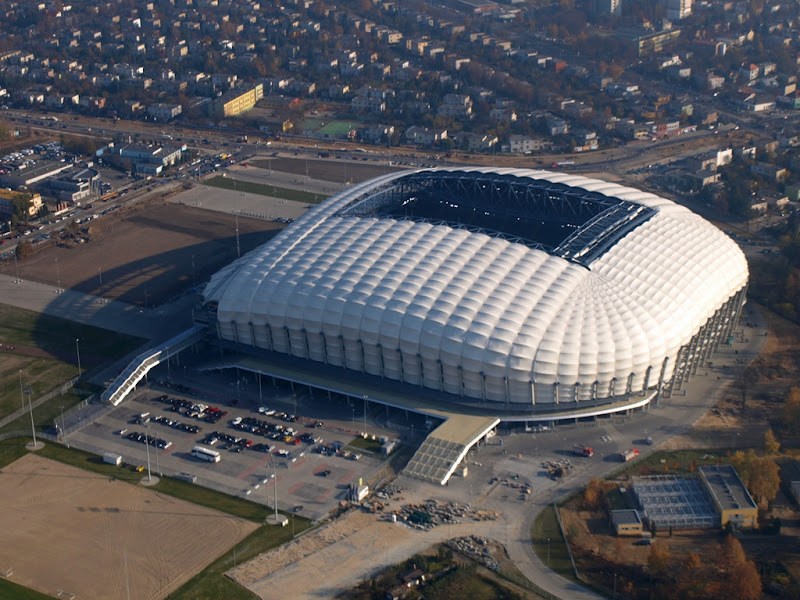
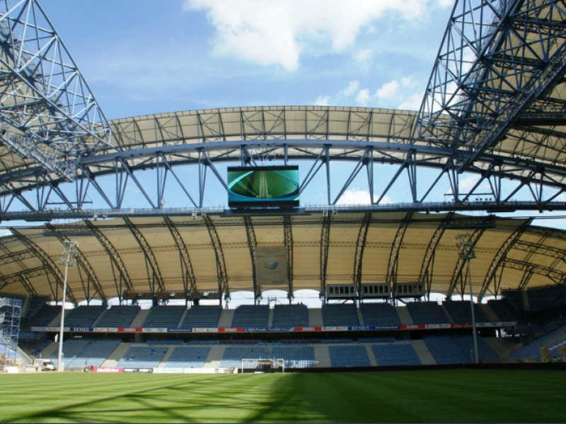
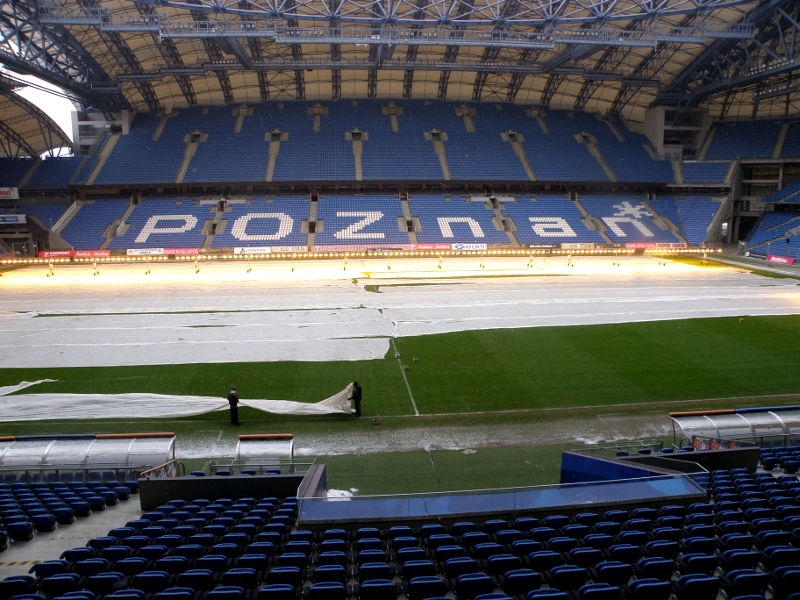
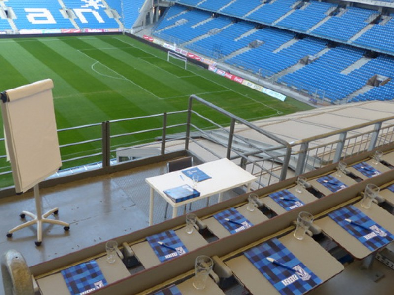
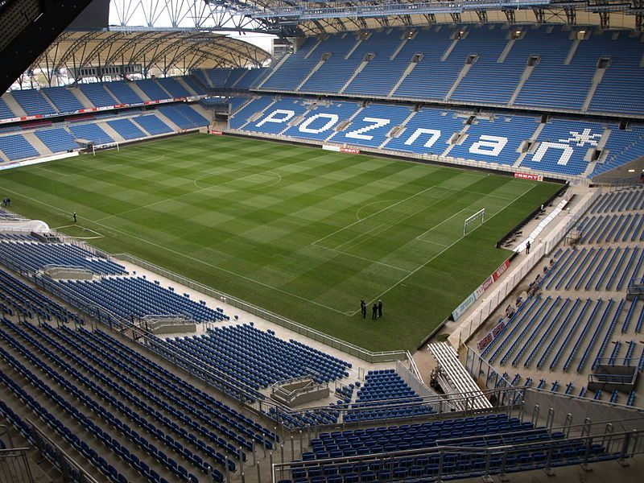
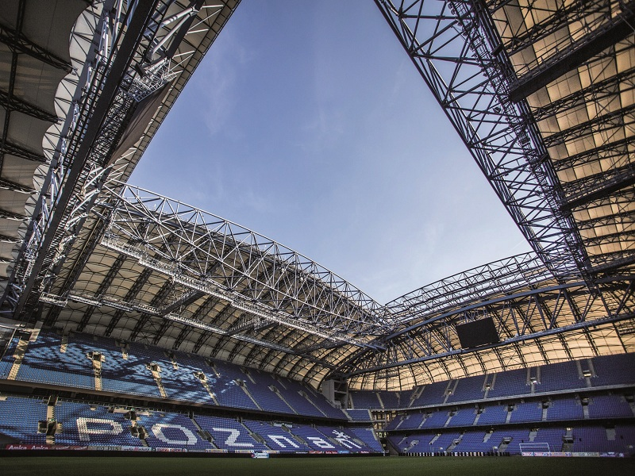
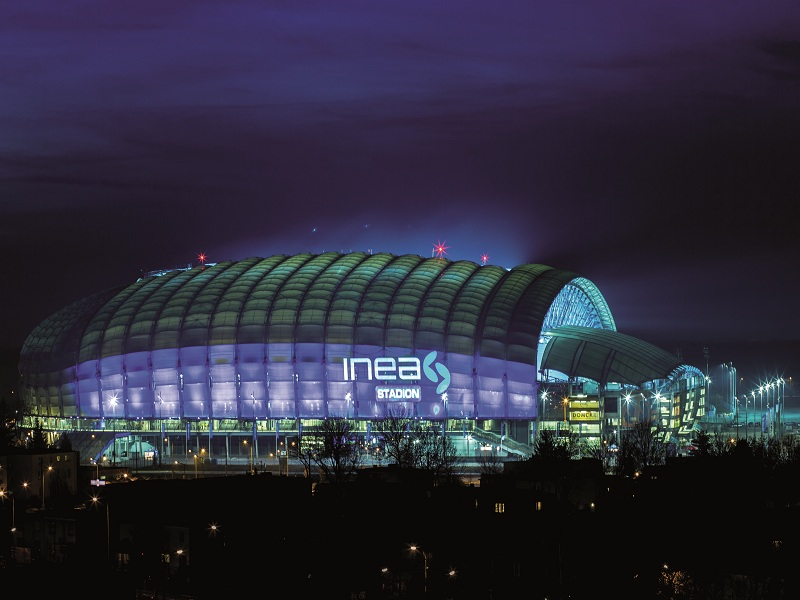
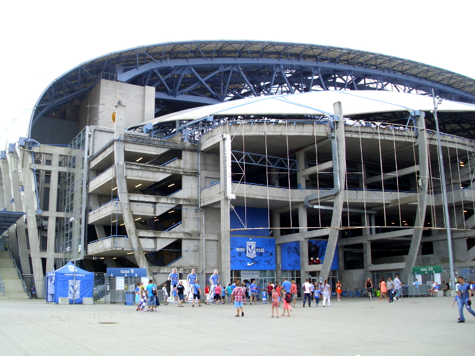

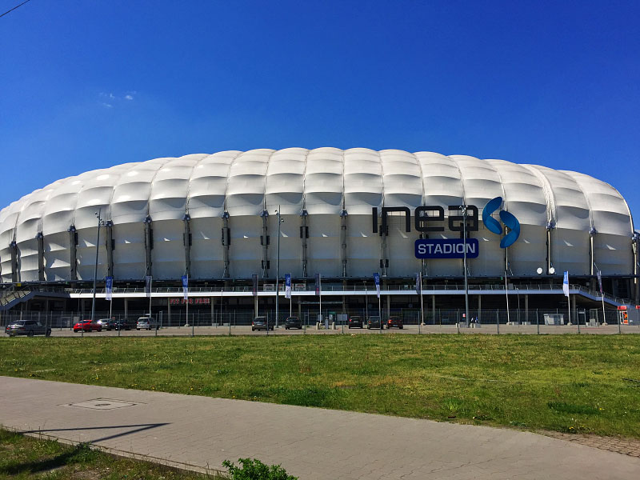
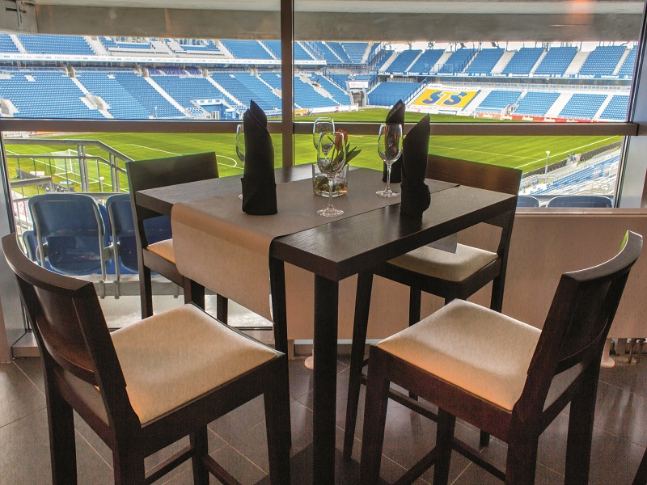
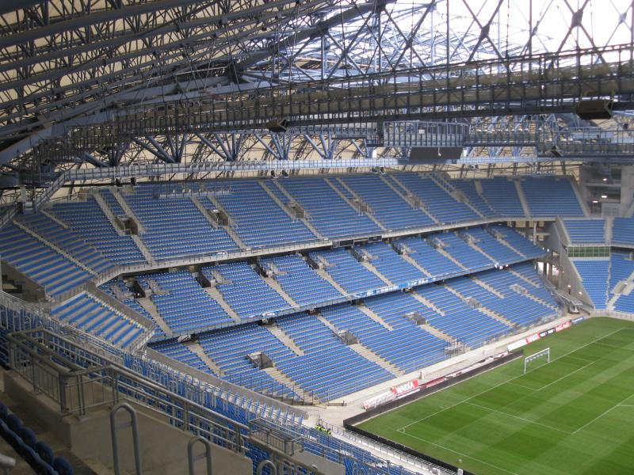